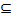
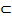
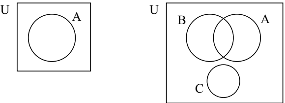
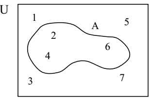
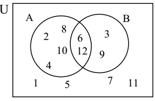

Section 1.5 Description of sets
Sets are described or characterized by one of the following four different ways.
-
Verbal Method
In this method, an ordinary English statement with minimum mathematical symbolization of the property of the elements is used to describe a set. Actually, the statement could be in any language.
Example 1.23:
a. The set of counting numbers less than ten.
b. The set of letters in the word “Addis Ababa.”
c. The set of all countries in Africa.
2. Roster/Complete Listing MethodIf the elements of a set can all be listed, we list them all between a pair of braces without repetition separating by commas, and without concern about the order of their appearance. Such a method of describing a set is called the roster/complete listing method.
Examples 1.24:
-
The set of vowels in English alphabet may also be described as \(\{ a,\ e,\ i,\ o,\ u\}\text{.}\)
b. The set of positive factors of 24 is also described as \(\{ 1,\ 2,\ 3,\ 4,\ 6,\ 8,\ 12,\ 24\}\text{.}\)
Remark:
-
We agree on the convention that the order of writing the elements in the list is immaterial. As a result the sets \(\{ a,\ b,\ c\},\ \{ b,\ c,\ a\}\) and \(\{ c,\ a,\ b\}\) contain the same elements, namely \(a,\ b\) and \(\text{c.}\)
-
The set \(\{ a,\ a,\ b,\ b,\ b\}\) contains just two distinct elements; namely \(a\) and \(b\text{,}\) hence it is the same set as \(\left\{ a,\ b \right\}.\) We list distinct elements without repetition.
Example 1.25:
Notice that \(c\) and \(\left\{ c \right\}\) are different objects. Here \(\left\{ c \right\} \in A\) but \(c \notin A\text{.}\)
-
Let \(B = \left\{ \left\{ a \right\} \right\}\text{.}\) The only element of \(B\) is \(\{ a\}\text{.}\) But \(a \notin B\text{.}\)
-
Let \(C\ = \ \{ a,\ b,\ \{ a,\ b\},\ \{ a,\ \{ a\}\}\}.\) Then C has four elements. The readers are invited to write down all the elements of C.
-
Partial Listing Method
In many occasions, the number of elements of a set may be too large to list them all; and in other occasions there may not be an end to the list. In such cases we look for a common property of the elements and describe the set by partially listing the elements. More precisely, if the common property is simple that it can easily be identified from a list of the first few elements, then with in a pair of braces, we list these few elements followed (or preceded) by exactly three dotes and possibly by one last element. The following are such instances of describing sets by partial listing method.
Example 1.26:
-
The set of all counting numbers is \(\mathbb{N\ = \ \{}1,\ 2,\ 3,\ 4,\ \ldots\}\text{.}\)
-
The set of non-positive integers is \(\{\mathbf{\ldots},\ - 4,\ - 3,\ - 2,\ - 1,\ 0\}\text{.}\)
-
The set of multiples of 5 is \(\{\mathbf{\ldots},\ - 15,\ - 10,\ - 5,\ 0\ 5,\ 10,\ 15,\ \mathbf{\ldots}\}\text{.}\)
-
The set of odd integers less than 100 is \(\{\mathbf{\ldots},\ - 3,\ - 1,\ 1,\ 3,\ 5,\ldots\ 99\}.\)
-
Set-builder Method
When all the elements satisfy a common property \(P\text{,}\) we express the situation as an open proposition \(P(x)\) and describe the set using a method called the Set-builder Method as follows:
\begin{equation*}
A\ = \ \{ x\ |\ P(x)\}\ or\ A\ = \ \{ x\mathbf{:\ }P(x)\}
\end{equation*}
We read it as “\(A\) is equal to the set of all \(x\)’s such that \(P(x)\) is true.” Here the bar \(``|\ ‟\) and the colon “” mean “such that.” Notice that the letter \(x\) is only a place holder and can be replaced throughout by other letters. So, for a property \(P\text{,}\) the set {\(x\ |\ P(x)\},\ \{ t\ |\ P(t)\}\) and \(\{ y\ |P(y)\}\) are all the same set.
Example 1.27: The following sets are described using the set-builder method.
-
\(A = \{ x\ |\ x\ \text{is\ a\ vowel\ in\ the\ English\ alphabet}\}\text{.}\)
-
\(\displaystyle B = \{ t\ |\ t\ \text{is\ an\ even\ integer}\}.\)
-
\(\displaystyle C = \{ n\ |\ n\ \text{is\ a\ natural\ number\ and\ }2n\ –\ 15\ \text{is\ negative}\}.\)
-
\(\displaystyle D = \{ y|\ y^{2}–\ y\ –\ 6\ = \ 0\}.\)
-
\(\displaystyle E = \{ x\ |\ x\ \text{is\ an\ integer\ and\ }x\ –\ 1\ < \ 0 \Longrightarrow x^{2}–\ 4\ > \ 0\}.\)
Exercise: Express each of the above by using either the complete or the partial listing method.
| Definition 1.10: The set which has no element is called the empty (or null) set and is denoted by \(\phi\) or \(\{\}\text{.}\) |
| Definition 1.11: A set is finite if it has limited number of elements and it is called infinite if it has unlimited number of elements. |
Relationships between two sets
|
Definition 1.12: Set \(B\) is said to be a subset of set \(A\) (or is contained in \(A\)), denoted by \(B \subseteq A\text{,}\) if every element of \(B\) is an element of \(A\text{,}\) i.e.,
\(\left( \forall x \right)(x \in B \Longrightarrow x \in A)\text{.}\)
It follows from the definition that set \(B\) is not a subset of set \(A\) if at least one element of \(B\) is not an element of \(A\text{.}\) i.e., \(B \nsubseteq A \Longleftrightarrow \left( \exists x \right)\left( x \in B \Longrightarrow x \notin A \right)\text{.}\) In such cases we write \(B \nsubseteq A\) or \(A \nsupseteq B\text{.}\)
|
Example 1.29:
-
If \(A\ = \ \{ a,\ b\}\text{,}\) \(B\ = \ \{ a,\ b,\ c\}\) and \(\ C\ = \ \{ a,\ b,\ d\}\text{,}\) then \(A \subseteq \ B\) and \(A \subseteq C.\) On the other hand, it is clear that: \(B \nsubseteq A\text{,}\) \(B \nsubseteq C\) and \(C \nsubseteq B\text{.}\)
-
If \(S = \{ x\ |\ x\ \text{is\ a\ multiple\ of}\ 6\}\) and\(\ T\ = \ \{ x\ |\ x\ \text{is\ even\ integer}\}\text{,}\) then \(S \subseteq T\) since every multiple of 6 is even. However, \(2 \in T\) while \(2 \notin S\text{.}\) Thus \(T \nsubseteq S\text{.}\)
-
If \(A\ = \ \{ a,\ \{ b\}\},\) then \(\{ a\} \subseteq A\)and \(\left\{ \left\{ b \right\} \right\} \subseteq A\text{.}\) On the other hand, since \(b \notin A\text{,}\) \(\{ b\}\ \nsubseteq A\text{,}\) and \(\{ a,\ \ b\}\ \nsubseteq A\text{.}\)
Example 1.30:
-
The sets \(\{ 1,\ 2,\ 3\},\ \{ 2,\ 1,\ 3\},\ \{ 1,\ 3,\ 2\}\) are all equal.
-
\(\{ x\ |\ x\ is\ a\ counting\ number\}\ = \ \{ x\ |\ x\ is\ a\ positive\ integer\}\)\(\{ x\ |\ x\ \text{is\ a\ counting\ number}\}\ = \ \{ x\ |\ x\ \text{is\ a\ positive\ integer}\}\)
|
Definition 1.14: Set \(A\) is said to be a proper subset of set \(B\) if every element of \(A\) is also an element of \(B\text{,}\) but \(B\) has at least one element that is not in \(A\text{.}\) In this case, we write \(A\mathbf{\subset}B\text{.}\) We also say \(B\) is a proper super set of A, and write \(B \supset A\text{.}\) It is clear that
\(A \subset B \Longleftrightarrow \lbrack\left( \forall x \right)(x \in A \Longrightarrow x \in B) \land (A \neq B)\rbrack\text{.}\)
|
Remark: Some authors do not use the symbol

. Instead they use the symbol 
for both subset and proper subset. In this material, we prefer to use the notations commonly used in high school mathematics, and we continue using and differently, namely for subset and proper subset, respectively.
Example 1.31: Let \(A = \{ x,y,z\}\text{.}\) As noted before, \(\phi\) and \(A\) are subset of \(A\text{.}\) Moreover, \(\left\{ x \right\},\left\{ y \right\},\left\{ z \right\},\left\{ x,y \right\},\left\{ x,z \right\}\) and \(\left\{ y,z \right\}\) are also subsets of \(A\text{.}\) Therefore,
\(P\left( A \right) = \{\phi,\left\{ x \right\},\left\{ y \right\},\left\{ z \right\},\left\{ x,y \right\},\left\{ x,z \right\},\left\{ y,z \right\},A\}\text{.}\)
Frequently it is necessary to limit the topic of discussion to elements of a certain fixed set and regard all sets under consideration as a subset of this fixed set. We call this set the universal set or the universe and denoted by \(\mathbf{U}\text{.}\)
Exercises
|
Subsection 1.5.1 Set Operations and Venn diagrams
Given two subsets \(A\) and \(B\) of a universal set \(U\text{,}\) new sets can be formed using \(A\) and \(B\) in many ways, such as taking common elements or non-common elements, and putting everything together. Such processes of forming new sets are called set operations. In this section, three most important operations, namely union, intersection and complement are discussed.
As easily seen the union operator “” in the theory of set is the counterpart of the logical operator “ ”.
”.
As suggested by definition 1.17, the intersection operator “” in the theory of sets is the counterpart of the logical operator “ ”.
”.
Example 1.32:
-
Let \(A\ = \ \{ 0,\ 1,\ 3,\ 5,\ 6\}\) and \(B\ = \ \{ 1,\ 2,\ 3,\ 4,\ 6,\ 7\}\text{.}\) Then, \(A \cup B\ = \ \{ 0,\ 1,\ 2,\ 3,\ 4,\ 5,\ 6,\ 7\}\) and \(A \cap B\ = \ \{ 1,\ 3,\ 6\}\text{.}\)
-
Let \(A\) = The set of positive even integers, and \(B\) = The set of positive multiples of 3. Then,
\begin{equation*}
A \cup B = \{ x:x\ \text{is\ a\ positive\ intger\ that\ is\ either\ even\ or\ a\ multiple\ of}\ 3\}
\end{equation*}
\(= \ \{ x\ |\ x\ \text{is\ a\ positive\ multiple\ of}\ 6.\}\)
|
Definition 1.18: The difference between two sets \(A\) and \(B\text{,}\) denoted by \(A - B\text{,}\) is the of all elements in \(A\) and not in \(B\text{;}\) this set is also called the relative complement of \(B\) with respect to \(A\text{.}\) Symbolically,
\(A - B = \{ x:x \in A \land x \notin B\}\text{.}\)
|
Note: \(A\ –\ B\) is sometimes denoted by \(A\backslash B\text{.}\) \(A\ –\ B\) and \(A\backslash B\) are used interchangeably.
Example 1.33: If \(= \{ 1,3,5\}\text{,}\) \(B = \{ 1,2\}\text{,}\) then \(A - B = \{ 3,5\}\) and \(B - A = \{ 2\}\text{.}\)
|
Definition 1.19: Let \(A\) be a subset of a universal set \(U\text{.}\) The absolute complement (or simply complement) of \(A\text{,}\) denoted by \(A'\) (or \(A^{c}\)or \(\overline{A}\ \ )\text{,}\) is defined to be the set of all elements of \(U\) that are not in \(A\text{.}\) That is,
\(A^{'} = \{ x:x \in U \land x \notin A\}\) or \(x \in A^{'} \Longleftrightarrow x \notin A \Longleftrightarrow \neg(x \in A)\text{.}\)
|
Notice that taking the absolute complement of \(A\) is the same as finding the relative complement of \(A\) with respect to the universal set \(U\text{.}\) That is,
\(A^{'} = U - A\text{.}\)
Example 1.34:
-
If \(U = \{ 0,1,2,3,4\}\text{,}\) and if \(A = \{ 3,4\}\text{,}\) then \(A^{'} = \{ 0,1,2\}\text{.}\)
-
Let \(U\ = \ \{ 1,\ 2,\ 3,\ \ldots,\ 12\}\) \(A = \{ x\ |\ x\ is\ a\ positive\ factor\ of\ 12\}\) and \(B\ = \ \{ x\ |\ x\ is\ an\ odd\ integer\ in\ U\}\text{.}\) Then, \(A\prime = \ \{ 5,\ 7,\ 8,\ 9,\ 10,\ 11\}\text{,}\)\(\text{\ B}\prime = \ \{ 2,\ 4,\ 6,\ 8,\ 10,\ 12\}\text{,}\) \((A \cup B)\prime = \ (8,\ 10\}\text{,}\)\(\text{\ A}\prime \cup B\prime = \ \{ 2,\ 4,\ 5,\ 6,\ \ldots,\ 12\}\text{,}\) \(A\prime \cap B\prime = \ \{ 8,\ 10\}\text{,}\) and \((A\backslash B)\prime = \ \{ 1,\ 3,\ 5,\ 7,\ 8,\ 9,\ 10,\ 11\}.\)
-
Let \(U\ = \ \{ a,\ b,\ c,\ d,\ e,\ f,\ g,\ h\},A\ = \ \{ a,\ e,\ g,\ h\}\) and \(B\ = \ \{ b,\ c,\ e,\ f,\ h\}\text{.}\) Then \(A\prime = \ \{ b,\ c,\ d,\ f\}\text{,}\)\(\text{\ B}\prime = \ \{ a,\ d,\ g\}\text{,}\) \(B\ –\ A\ = \ \{ b,\ c,\ f\}\text{,}\) \(A\ –\ B\ = \ \{ a,\ g\}\text{,}\) and \(\left( A \cup B \right)^{'} = \{ d\}\text{.}\)
Find \((A \cap B)'\text{,}\)\(\text{\ A}\prime \cap B'\text{,}\) \(A\prime \cup B'\text{.}\) Which of these are equal?
Now we define the symmetric difference of two sets.
Example 1.35: Let \(U = \{ 1,2,3,\ldots,10\}\) be the universal set, \(A = \{ 2,4,6,8,9,10\}\) and \(B = \{ 3,5,7,9\}\text{.}\) Then \(B - A = \{ 3,5,7\}\) and \(A - B = \{ 2,4,6,8,10\}\text{.}\) Thus \(\text{A\ }\Delta\ B = \{ 2,3,4,5,6,7,8,10\}\text{.}\)
Let us prove property “e” formally.
\(x \in A \cup \left( B \cap C \right) \Longleftrightarrow (x \in A) \vee (x \in B \cap C)\) (definition of )
\(\Longleftrightarrow x \in A \vee (x \in B \land x \in C)\ \) (definition of
)
\(\Longleftrightarrow (x \in A \vee x \in B) \land (x \in A \vee x \in C)\) ( is distributive over ) \(\Longleftrightarrow (x \in A\ \cup B) \land (x \in A\ \cup C\)) (definition of ) \(\Longleftrightarrow x \in (A \cup B) \cap (A \cup C)\) (definition of ) Therefore, we have \(A \cup \left( B \cap C \right) = (A \cup B) \cap (A \cup C)\text{.}\)
The readers are invited to prove the rest part of theorem (1.2).
Venn diagrams
While working with sets, it is helpful to use diagrams, called Venn diagrams, to illustrate the relationships involved. A Venn diagram is a schematic or pictorial representative of the sets involved in the discussion. Usually sets are represented as interlocking circles, each of which is enclosed in a rectangle, which represents the universal set \(U\text{.}\)

In some occasions, we list the elements of set \(A\) inside the closed curve representing \(A\text{.}\)
Example 1.36:
-
If \(U\ = \ \{ 1,\ 2,\ 3,\ 4,\ 5,\ 6,\ 7\}\) and \(A\ = \ \{ 2,\ 4,\ 6\}\text{,}\) then a Venn diagram representation of these two sets looks like the following.

\begin{equation*}
A\ = \ \{ x\ |\ x \in U\ \text{and}\text{\ x\ }\text{is\ even}\}
\end{equation*}

Example 1.37: Let U = The set of one digits numbers
A = The set of one digits even numbers
B = The set of positive prime numbers less than 10
We illustrate the sets using a Venn diagram as follows.
-
Illustrate \(A \cap B\) by a Venn diagram

-
Illustrate A’ by a Venn diagram
-
Illustrate A\B by using a Venn diagram
Now we illustrate intersections and unions of sets by Venn diagram.
| Cases | Shaded is \(A \cup B\) | Shaded \(A \cap B\) |
|---|---|---|
| Only some common elements | ||
\begin{equation*}
A \subseteq B
\end{equation*}
|
||
| No common element |
Exercises
|
\(B = \{ 1,3,5,6,10\}\) and
Describe each of the sets by complete listing method:
Describe each of the sets by complete listing method:
\(B =\){\(\ x \in U|\) \(x\) is composite number } and \(C\ = \ \{ x \in U|\ x\ –\ 5 \in U\}\text{.}\) Then find each of the following.
\begin{equation*}
A \cap B,\ (A \cup B) \cap C,\ (A\ –\ B) \cup C,\ (A\ –\ B)\ –\ C,\ A\ –\ (B\ –\ C),(A\ –\ C)\ –\ (B\ –\ A),\ A\prime \cap B\prime \cap C\prime
\end{equation*}
B = The set of high school anti-AIDS club member students in Addis Ababa. C = The set of high school Nature Club member students in Addis Ababa.
|